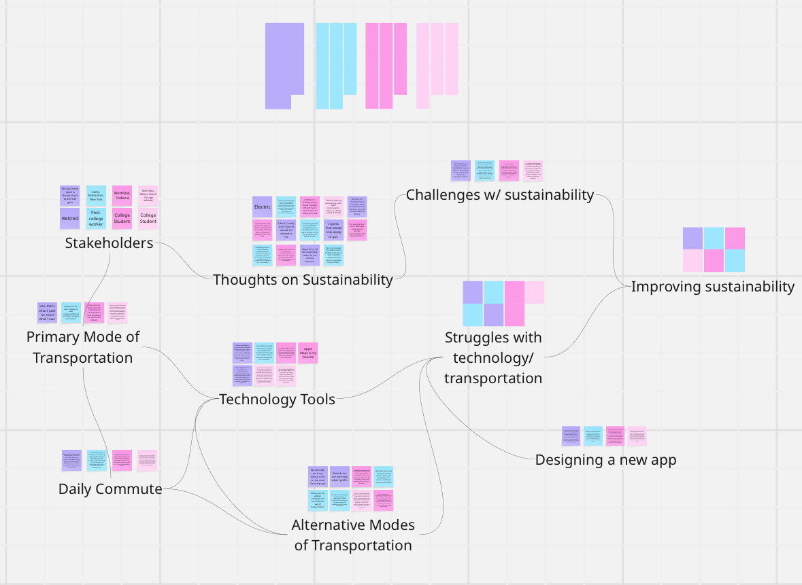
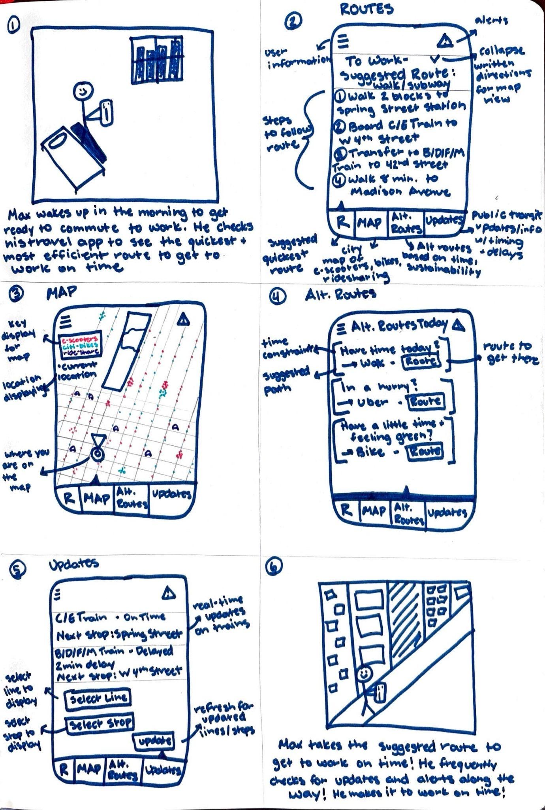
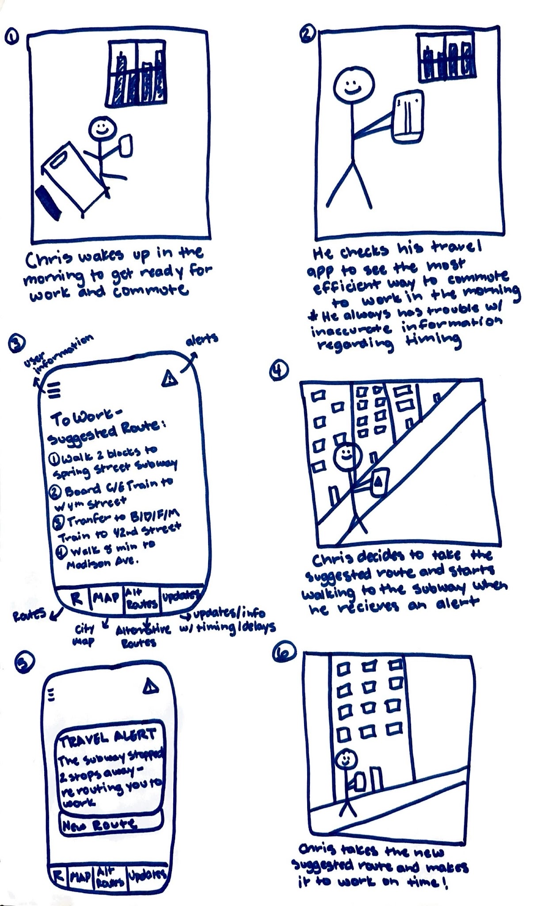
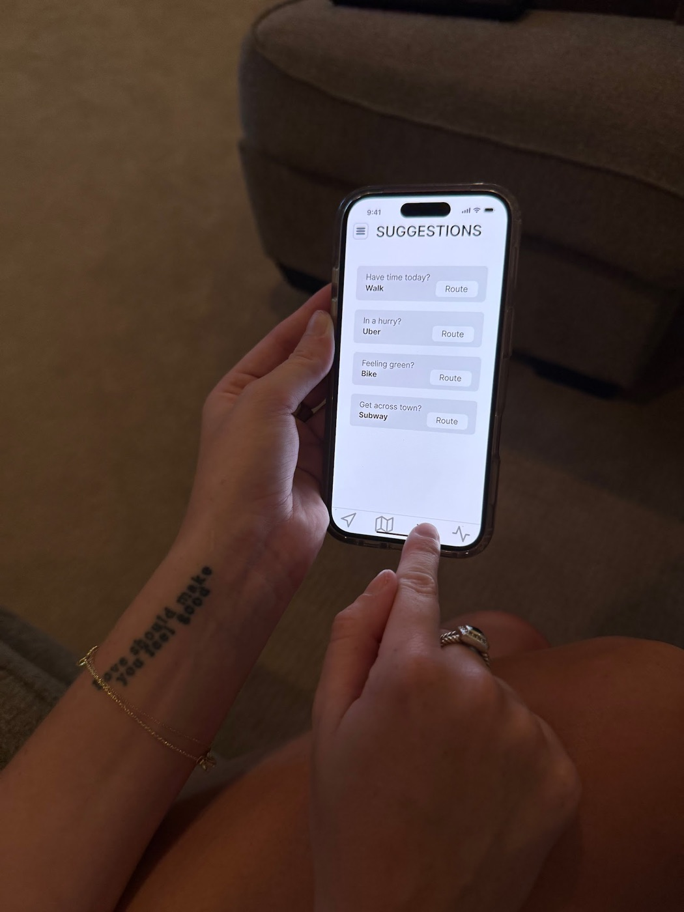
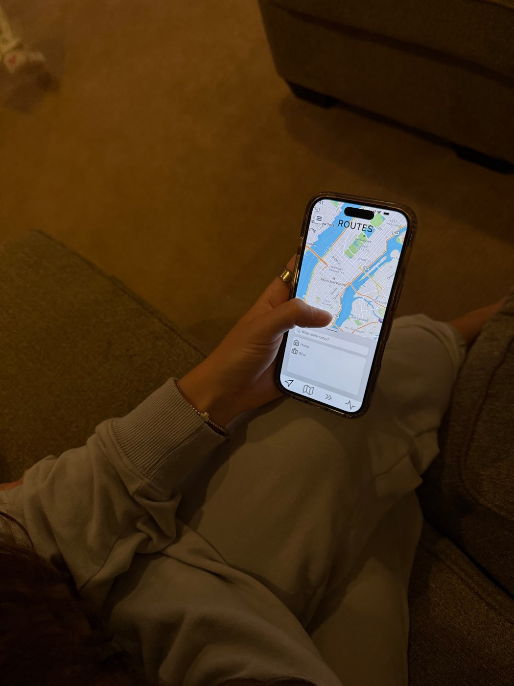
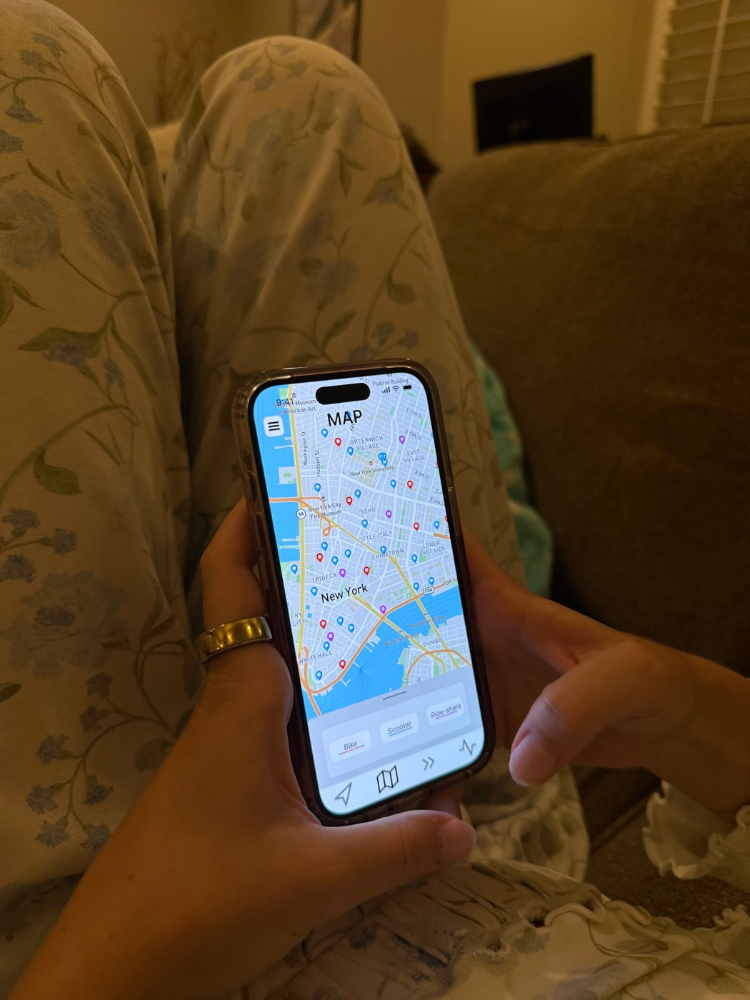
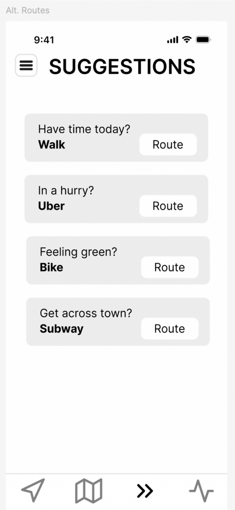
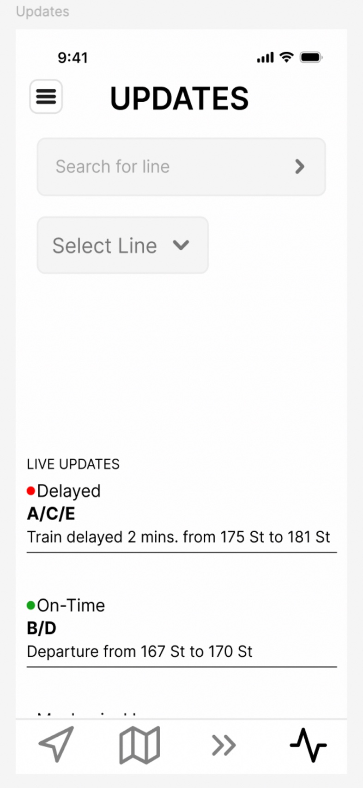
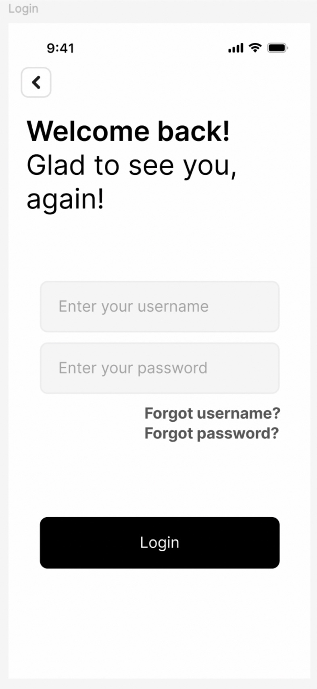

The problem
People choose speed over sustainability, because the green option is rarely the easy one.
For this course I chose the design challenge of urban mobility and sustainability, and framed it as one question:
“How might we empower environmentally conscious people to explore, compare and combine sustainable transportation options, to reduce their carbon footprint and contribute to a cleaner environment?”
My problem statement
Three academic papers on sustainable mobility pointed the way:
- Most tools target individuals, not the way a whole city moves.
- Goals and rewards change behavior more than information alone.
- A smart city connects its transportation, resources and infrastructure.
My role
A solo project: I ran every step, from research and interviews to prototypes and user testing.
- Research: secondary research, an interview protocol I piloted and revised, and five interviews.
- Synthesis: an affinity diagram, two personas and four early concepts.
- Design: sketches, then Figma wireframes and prototypes through four versions.
- Evaluation: a heuristic evaluation, then moderated user tests with a script I refined after a pilot.
Research
Five people who get around five different ways all said the same thing: reliability comes first.
- academic papers reviewed
- 3
- 30-minute interviews, one of them a pilot
- 5
- themes in my affinity diagram
- 4
- personas built from the patterns
- 2
I chose interviewees on purpose to cover different ways of getting around, life stages, places and comfort with technology:
| Who | Where | Gets around by | Biggest frustration |
|---|---|---|---|
| Sales Executive (pilot) | Suburban Denver | Car only | Traffic can double the commute, and transit stops are too far apart. |
| Account Manager | Manhattan, New York | Subway and taxis | Delays and reroutes, with apps showing the wrong information. |
| Design Intern | Chicago suburbs | Train and two buses | Stuck on stopped trains with no updates. |
| Student | Westfield, Indiana | Car | No public transit at all. |
| Retiree living on the road | Traveling by van | Van and rental cars | Doesn't trust ride-sharing, and apps fail without signal. |
- Reliability beats everything: delays, breakdowns and reroutes push people away from transit.
- Apps are essential, but they fail when it matters: during service changes, construction and detours.
- Sustainability is an afterthought: people pick the fastest, most convenient option, even when they care about the planet.
“Even with the best planning, the subway has its own agenda.”
Account manager, Manhattan
“If it's inconvenient I'm not going to change my plans based on sustainability.”
Student, Indiana
So the design goal became: make the sustainable option the convenient one.
Synthesis

View the full affinity diagram in Miro (opens in a new tab)
Personas
-
Drives
Chris Banks
45 · Industry Professional · Suburban Area
- Background
- He drives everywhere because transit near him is limited. He values convenience and freedom; he knows about sustainability, but it isn't a priority.
- Transportation habits
- Primarily uses a personal car or van for all travel
- Uses ride-share services (Uber/Lyft) when drinking or with friends
- Frustrations
- Navigation apps not updating with construction or road closures
- Struggles with time management due to being stuck in traffic or on unreliable routes
- Goals
- Quick, reliable and convenient transportation for all needs
- Efficient routes that avoid traffic and construction
Where PathForward comes in:- Real-time updates on road conditions
- The quickest, most efficient route suggestions
-
Transit
Rachel Stevenson
21 · Student and Intern · Major City
- Background
- She relies on transit to commute and picks efficiency over sustainability. She's tech savvy, but unreliable transit information keeps letting her down.
- Transportation habits
- Primarily uses the subway, trains and buses for her daily commute
- May use e-scooters or Citi Bike for shorter distances
- Frustrations
- Public transportation delays, reroutes or skipped stops
- Inaccurate or confusing information from transit apps
- Goals
- A predictable and efficient daily commute
- Reliable real-time transportation updates
Where PathForward comes in:- Real-time, accurate updates, even during service changes
- Instant suggestions for alternative routes
Ideas and iterations
Four concepts merged into one app, and the name changed as the idea sharpened.
- Community Cargo
- Green PathForward
- PathForward
I started with four concepts, then combined the strongest parts of each:
- Green CityMapA live map of transit, e-scooters, bikes and rides
- CommuteScheduleRoutes planned around traffic and time of day
- CityFlow LiveLive transit updates and alerts
- SmartRoute ProSeveral sustainable routes to one destination


- Sketches 1.0 and 1.5 Paper sketches of the map, suggestions and live updates, refined once after review.
- Wireframes 2.0 and 2.5 Figma wireframes for the four core tasks. A heuristic evaluation found three major issues: no "forgot username", no way to view or edit your profile, and no back button between bikes, scooters and rides.
- Prototype 3.0 I fixed all three, and added a favorite transit lines menu so frequent riders get updates faster.
- User testing and Prototype 4.0 Three testers used the prototype; their feedback shaped the final version below.
What I built
One app for every way to get around: a live map, suggested routes and transit updates.
Prototype 4.0, designed in Figma.
Testing
Three testers found the gaps I'd missed, and each one led to a fix.
After a pilot, I rewrote my script so testers explored freely instead of following numbered steps: find a bike for lunch uptown, plan a route to an 11 a.m. meeting, and check a train when running late. They thought aloud as they went.



| What testing showed | What I changed |
|---|---|
| Testers tried to pinch and zoom the map, and it didn't respond. | Made the map interactive, with zoom in and out. |
| Nav icons had no labels, and the current screen wasn't clear. | Added labels, made the icons smaller and highlighted the current screen. |
| "Rides nearby" looked tappable but did nothing. | Showed real-time locations and details of nearby rides. |
| Two "forgot" links on the login felt cluttered. | Combined them into one line. |
| Spacing and sizes were inconsistent across screens. | Made similar elements match in size and spacing. |
Before and after: drag to compare



Outcome
Four rounds of design and testing, from sketches to Prototype 4.0.
- Every way to get around, in one place: a live map of bikes, scooters and rides, suggested routes for different situations, and live transit updates.
- Every round fixed something real: the heuristic evaluation caught three major issues, and user testing caught five more.
Version 5 is in progress. I'm redesigning PathForward in Figma, building on everything above. This page will show the changes from version 4 to version 5 once it's done.
Reflection
Users see what designers overlook.
- Make the green option the easy one. My interviews showed that people choose convenience first, so sustainability has to be built into the fastest path, not added as a lecture.
- Different methods catch different problems. The heuristic evaluation found structural gaps; real users found the things that felt wrong in their hands.
- Pilot everything. Piloting my interview guide and test script made both better before they reached real participants.
Next: version 5, the redesign I'm working on now in Figma.